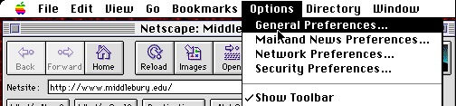
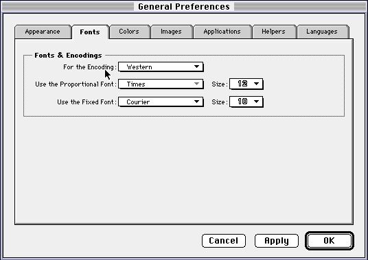
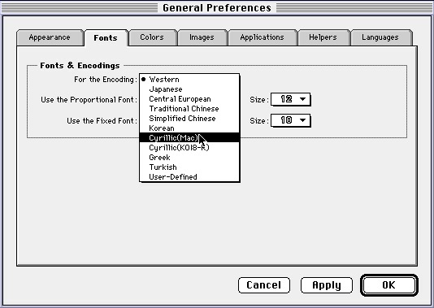
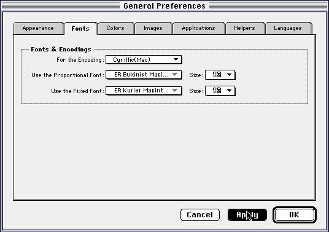
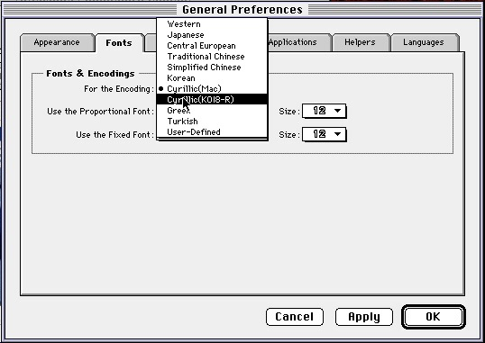
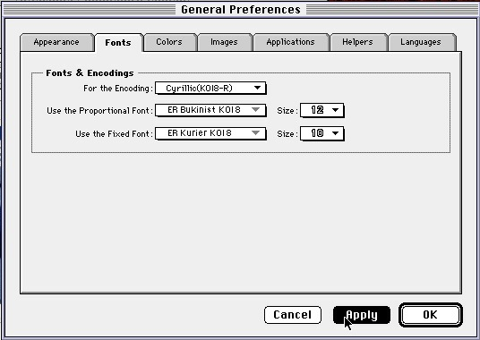

Page index / PC-MacRussian
Configurations of Netscape Navigator 3
Configuration of Netscape Navigator 3 Step One
Launch Netscape Navigator 3 from the apple menu or by double-clicking on its icon. Go to the "Options" menu and choose "General Preferences", as
Click on the 'font' tab.

Select 'Cyrillic(Mac)' from the pull-down menu near "For the encoding:".

From the pull-down menu near "Use the Proportional Font:", select 'ER Bukinist Macintosh'. For the "Use the Fixed Font:", select 'ER Kurier Macintosh' from the pull-down menu. Then click on the 'Apply' button.

Now select 'Cyrillic(KOI8-R)' from the pull-down menu near "For the encoding:".

Then select 'ER Bukinist KOI8' and 'ER Kurier KOI8' from the pull-down menu near "Use the Proportional Font:" and "Use the Fixed Font:", respectively, before clicking on the 'Apply' button.

Click on the 'OK' button and go on to the next step.